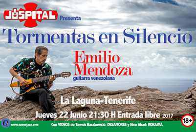

|
COMPOSICIÓN
& GUITARRA
INVESTIGACIÓN -
ESCRITOS
CURRICULA

Con Catálysis, Concierto de
Rock Experimental,
Liceo San José, Los Teques,
07-06-1973
|
|

Concierto,
Jóspital, La Laguna, Tenerife,
22-06-2017
RESUMEN
BIOGRÁFICO
Fue
el primer venezolano en ser
seleccionado para un festival ISCM
en Boston 1976, cuando tenía 23
años y en ganar el prestigioso
Premio de Composición Gaudeamus
1978, en Bilthoven, Países Bajos.
Alumno de Yannis Ioannidis,
cofundó la SVMC - Sociedad
Venezolana de Música Contemporánea
en 1975, ejerciendo
poste-riormente su presidencia.
Obtuvo el Diplom in
Komposition,
Live-Elektroniks, en el Robert
Schumann Institut -
Musikhochschule, Düsseldorf, 1980
y estudió Danza y Percusión
Africana en Düsseldorf y
Kokrobitey, Ghana, 1981, con
Mustapha Tettey Addy.
Premio Nacional de Composición,
1981, 1991, cofundó, dirigió,
ejecutó y compuso para la Orquesta
de Instrumentos Latinoamericanos
ODILA en Caracas, 1982-87, con
giras, discos, video-arte y danza.
Recibió el Doctor of Musical
Arts (DMA) in Composition en
la Catholic University of America,
Washington, DC, 1990. Fue Profesor
Asistente en Potsdam College-SUNY,
EUA, 1991-94. En 1995, desarrolló
el primer web a/v cultural de
Venezuela sobre instrumentos
musicales, como Presidente de la
Fundación de Etnomusicología y
Folklore, FUNDEF, en Caracas.
Profesor Titular (Jubilado) de la
Universidad Simón Bolívar,
Caracas, 1998-2013, fundador y
primer Presidente de la
IASPM/AL-Capítulo Venezuela así
como miembro del Consejo
Presidencial de la ISCM por dos
períodos (2004-08). Se dedica al
activismo ecológico musical como
guitarrista con su grupo Ozono
Jazz, a la publicación de
composiciones y artículos, así
como a la investigación
audiovisual y musicológica.
|
Residencia de
investigación A/V (DAAD)
ZKM -Zentrum für Kunst und Medien,
Karlsruhe, Sept. - Dic., 2013
|